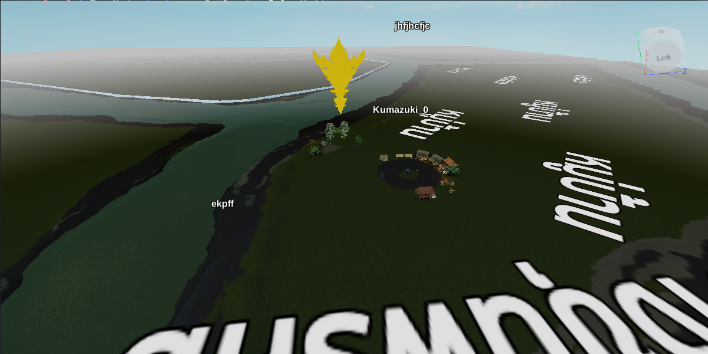
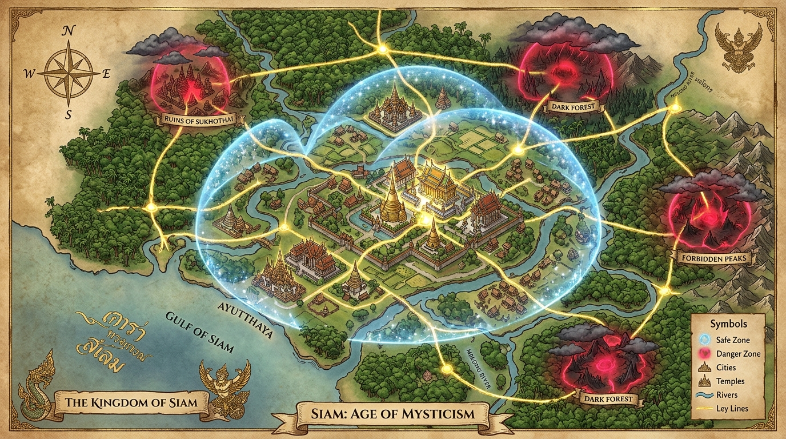

สงครามที่คุณสร้าง
พันธมิตรอาจเปลี่ยนเป็นศัตรู เมืองอาจรุ่งเรืองหรือล่มสลาย และชื่อของผู้ชนะจะถูกจดจำโดยผู้เล่นด้วยกันเอง
นครหลวง
หัวเมือง
ชายแดน
 เนรมิตสยาม
เนรมิตสยาม

โลกกำลังถูกสร้าง
ก้าวสู่โลกสยามยุครัตนโกสินทร์
และร่วมทำสงครามไปด้วยกัน
โลก Roleplay บน Roblox · อยู่ระหว่างการพัฒนา
พงศาวดารที่ยังไม่ถูกเขียน
ดินแดนแต่ละแห่งมีผู้ปกครอง พันธมิตร และศัตรูของตนเอง เส้นทางที่คุณเลือกจะเปลี่ยนทั้งชื่อเสียง อำนาจ และพรมแดนของโลกใบนี้

ชีวิตในแผ่นดิน
ทุกบทบาทมีที่ยืนในโลกเดียวกัน ตั้งแต่ผู้สร้างเมือง ผู้ค้าขาย ไปจนถึงผู้กำหนดชะตาของสงคราม
พันธมิตรอาจเปลี่ยนเป็นศัตรู เมืองอาจรุ่งเรืองหรือล่มสลาย และชื่อของผู้ชนะจะถูกจดจำโดยผู้เล่นด้วยกันเอง
คุณไม่จำเป็นต้องถือดาบเพื่อเปลี่ยนโลก อำนาจ เงินตรา ฝีมือ และข่าวสาร ล้วนเป็นอาวุธในแผ่นดินเดียวกัน
จากเขตเมืองที่ได้รับการคุ้มครอง สู่ป่าและภูเขาที่เต็มไปด้วยอันตราย ทุกเส้นทางมีเรื่องราวรอให้ค้นพบ
จากโต๊ะสร้างโลก
เกมยังไม่เปิดให้บริการ ภาพที่เห็นคือพื้นที่จริงใน Roblox Studio ขณะทีมงานกำลังวางภูมิประเทศ ระบบประเทศ และเวทีสำหรับสงคราม
ทุกภาพที่เห็นคืองานจริง — ไม่ใช่สัญญา
จดหมายเชิญจากสยาม
พบผู้เล่นกลุ่มแรก ร่วมติดตามความคืบหน้า และเลือกบทบาทของคุณก่อนสงครามเริ่ม